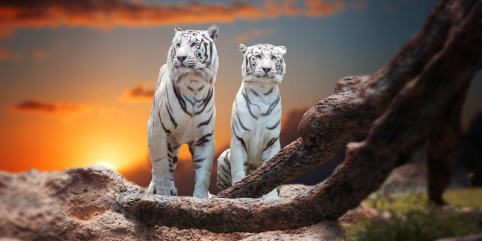
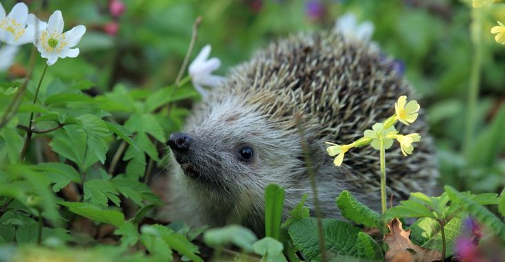
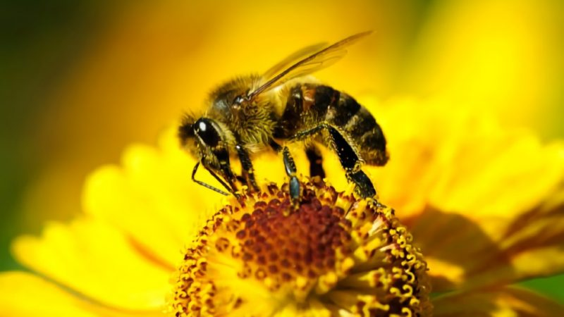

Un ser vivo es un conjunto de átomos y moléculas, que forman una estructura material muy organizada y compleja, en la que intervienen sistemas de comunicación molecular que se relaciona con el ambiente con un intercambio de materia y energía de una forma ordenada y que tiene la capacidad de desempeñar las funciones básicas de la vida que son:

Los seres vivos se dividen en tres reinos: El Reino animal, El Reino vegetal y El Reino de los hongos

Vamos a estudiar a los seres vivos desde el punto de vista ECOLÓGICO , que es el que plantea una visión integradora de los seres vivos con el medio ambiente, considerando la interacción de los distintos organismos entre sí y con el medio físico, así como los factores que afectan a su distribución y abundancia. El medio ambiente incluye tanto los factores físicos locales, tales como el clima y la geología, como los demás organismos que comparten el mismo hábitat.

Los seres vivos pueden estar formados por una célula, se llaman SERES UNICELULARES, son muy pequeños y para poderlos observar tenemos que hacerlo con el microscopio. Algunos seres unicelulares producen enfermedades, se llamas microbios.
Todos los seres vivos están conformados de agua. Las medusas de mar, por ejemplo, están constituidos por un 99% de agua mientras que algunos insectos están compuestos solo por un 40%. De todos modos y sea cual sea el porcentaje, el agua es fundamental para la vida de las especies ya que necesitan de ella para sobrevivir.

Además de tomar y eliminar el agua que necesitan, hay ciertas plantas y animales son capaces de almacenarla en sus organismos. Algunos lo hacen directamente en determinada parte de su cuerpo, como los lagartos por ejemplo, que pueden almacenar agua en las escamas de su piel. Otros lo hacen en depósitos de grasa, de los que pueden extraer H2O cuando lo necesitan.
Una de las características de los seres vivos más importantes es la reproducción, dado que gracias a ella todas las especies que habitan en el plantea pueden sobrevivir y multiplicar su número de individuos. A través de esta función, transmiten su información genética, determinante para el crecimiento celular.
